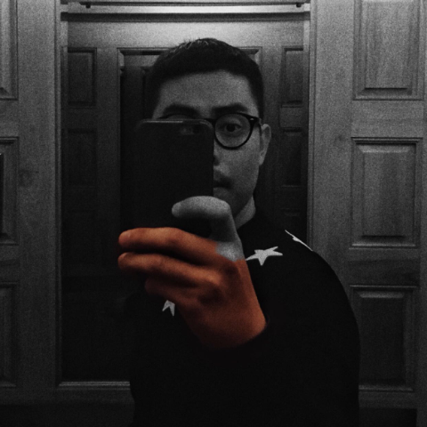

ABOUT ME
Born in a family where my father has taught me “idealism” and where my mother has taught me “reality”, I am now passionate on graphic design, through which I can integrate both “idealism” and “reality” beautifully and transform my inspiration into beauty to improve the world.
Being equipped with four years’ Purdue University undergraduate studies majoring in fine arts, I began my career as a Publicity and Event Planning Specialist. A string of tasks to create storyboards and concept posters enabled me to think critically about my artistic limitation and space for improvement— to excel in creating concept poster or other graphic designs creatively, artistic form and presentation should be created by integrated skills and technologies to meet the current users’ needs in an E-era.
As an artistic learner who always stays hungry for growth and perfection, my artistic life is a piece of incomplete painting, on which lies some strokes of black ink, colorful decoration, and sparkling spots. To complete this painting in a more art-friendly and inspiration-ruled way, I am passionate about pursuing better progress through learning The Master of Fine Arts in Design and Technology program.
